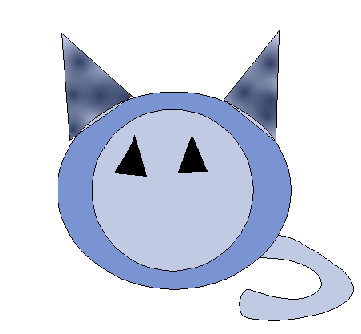

Hyperblog
Tu blog de cabecera
Este es el título atractivo e interesante del post
y este es el párrafo de inicio donde vamos a las cosas increíbles que se pueden hacer con ramas

El corazón es un órgano del tamaño aproximado de un puño. Está compuesto de tejido muscular y bombea sangre a todo el cuerpo.
Suscribete y dale like